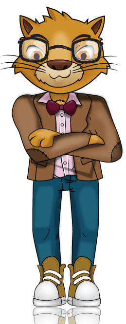

Formulario Enviado
Gracias por enviar tus datos. Nos pondremos en contacto a la mayor brevedad.
Serás redirigido a la página principal en 5 segundos.
Gracias por enviar tus datos. Nos pondremos en contacto a la mayor brevedad.